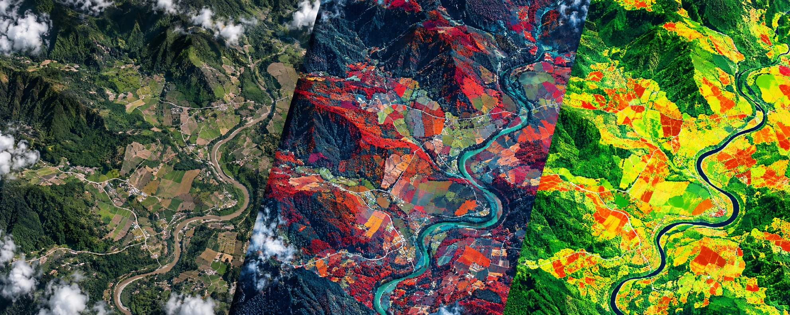

Geometría estable
La misma proyección, resolución y cuadrícula mantienen cada observación comparable píxel a píxel.
Transformamos imágenes satelitales en un datacubo consistente para Colombia: menos tiempo preparando datos, más tiempo encontrando respuestas.
Un datacubo organiza el territorio por lugar, fecha y variable. Así, cada nueva observación se compara con las anteriores sin reconstruir el proceso desde cero.
No entregamos una carpeta de archivos aislados. Entregamos una base territorial alineada, documentada y repetible para responder preguntas en el tiempo.
La misma proyección, resolución y cuadrícula mantienen cada observación comparable píxel a píxel.
Las bandas de reflectancia y calidad permiten separar información útil de nubes, sombras y valores no válidos.
Las series temporales permiten observar tendencias, estacionalidad y cambios en lugar de mirar una sola fotografía.
Cada producto puede reconstruirse con parámetros, versiones y evidencia de procesamiento trazables.
La complejidad técnica queda detrás de una cadena clara de ingestión, corrección, organización y entrega.
Seleccionamos observaciones Landsat y Sentinel-2 para la zona y el periodo de interés.
FORCE detecta nubes y sombras, corrige las escenas y crea reflectancia y calidad comparables.
Las observaciones se ordenan en grillas de 30 km, con píxeles de 10 m, sobre una estructura espacial estable.
Generamos índices, estadísticas temporales, recortes y entregables para cada caso de uso.
FORCE es software libre para procesar archivos de observación de la Tierra. Automatiza la preparación de grandes volúmenes de imágenes Landsat y Sentinel-2 y su análisis como series de tiempo.
Nuestro servicio traduce esa potencia técnica a productos documentados, soporte en español y formas de entrega que el equipo del cliente pueda usar.
Documentación técnica original de FORCEPartimos de imágenes de archivo adquiridas para una zona y periodo. Una escena todavía necesita correcciones y control de calidad antes de comparar fechas o calcular indicadores.
Las bandas espectrales pueden combinarse para inspección visual o transformarse en índices y métricas temporales. Cada producto ilumina una pregunta distinta y conserva la máscara de calidad utilizada.
Una vista cercana a lo que percibe el ojo humano. Sirve para interpretar coberturas, agua, suelo expuesto, infraestructura y contexto territorial.
rojo · verde · azulAsigna el infrarrojo cercano al canal rojo para resaltar vegetación activa y facilitar la lectura de humedad, agua y coberturas.
NIR · rojo · verdeExpresa la respuesta relativa de la vegetación. Puede analizarse por fecha, temporada, percentiles o tendencia entre años.
(NIR − rojo) / (NIR + rojo)Combina infrarrojo cercano e infrarrojo de onda corta. Ayuda a delimitar señales asociadas a áreas quemadas y a observar su recuperación; requiere comparación temporal y validación.
(NIR − SWIR2) / (NIR + SWIR2)La profundidad histórica de Landsat permite estudiar cambios desde los años ochenta; Sentinel-2 aporta mayor detalle espacial y observaciones desde 2016. Las fechas efectivamente disponibles se verifican para cada zona.
Landsat desde 1984 · Sentinel-2 desde 2016Descargar imágenes no crea un datacubo. FORCE ejecuta una cadena sistemática para que distintas fechas y sensores puedan compararse con criterios explícitos de calidad.
Detección avanzada y máscaras por píxel para excluir observaciones contaminadas.
Revisión de escenas y registro de píxeles válidos, agua, nieve, saturación y otras condiciones.
Corrección atmosférica, topográfica, de adyacencia y de geometría de observación cuando aplica.
Resoluciones, proyección y bandas se llevan a una estructura coherente para el análisis.
Las imágenes se alinean para que el mismo píxel represente el mismo lugar entre fechas.
Los datos se ordenan en grillas de 30 km, con metadatos y parámetros reproducibles.
El datacubo es la infraestructura. El valor aparece cuando se transforma en un producto que responde una decisión concreta.

Compara fechas, resume temporadas y localiza patrones de cambio con índices escalados y listos para SIG.
Vistas de color natural y falso color para interpretar el territorio con bandas visibles e infrarrojas.
Comparación antes/después, tendencias y trayectorias de recuperación con observaciones válidas.
NDVI, percentiles, composiciones, estadísticas y recortes adaptados a la decisión.
Seguimiento de vigor, comparación de lotes y análisis de ciclos productivos.
Observación de coberturas, restauración y cambios persistentes en el paisaje.
Contexto territorial para corredores, obras y áreas de influencia.
Datos repetibles para modelos, estudios históricos y validación de hipótesis.
La web explica y gestiona el servicio. Los rásteres no viajan a través de esta página: se entregan desde nuestra infraestructura mediante un canal separado y controlado.
sec=krb5proot_squash y mínimos privilegiosmount -t nfs4 -o ro,sec=krb5p nfs.privado:/productos /datos/datacube-colombia
Nunca publicaríamos NFS directamente en internet. Antes de activar un cliente se validan red, DNS, identidad, rendimiento, permisos y soporte operativo.
Elige el nivel de integración según tu equipo, frecuencia y área. Esta recomendación es orientativa para diseñar un piloto.
Los precios se definen después de medir área, histórico, frecuencia y nivel de servicio. Así evitas pagar por capacidad que todavía no necesitas.
Piloto de alcance cerrado
Suscripción periódica
Contrato a medida
Sí. La grilla nacional contiene 1.407 celdas de 30 × 30 km que intersectan el territorio colombiano, incluidas las áreas insulares presentes en el límite utilizado. La cobertura espacial nacional no significa que todas las fechas estén libres de nubes; para cada solicitud confirmamos sensores, observaciones válidas y profundidad histórica.
Convierte imágenes satelitales en datos corregidos y organizados, filtra observaciones mediante información de calidad y ejecuta análisis temporales. En esta página explicamos en español los conceptos necesarios para usar el servicio sin depender de documentación en inglés.
No. Puedes recibir un raster listo para QGIS o ArcGIS, una tabla de resultados o un flujo para Python. La complejidad depende del nivel de integración que elijas.
Que las imágenes han sido corregidas, alineadas en una cuadrícula estable y acompañadas de información de calidad. Aun así, cada producto requiere una definición clara y validación para su uso previsto.
Sí. NDVI es un ejemplo. El catálogo puede crecer con otros índices espectrales, composiciones temporales y estadísticas, siempre que las bandas y observaciones disponibles soporten el cálculo.
El archivo Landsat permite construir series potenciales desde 1984 y Sentinel-2 aporta observaciones de mayor detalle desde 2016. Para cada solicitud verificamos cobertura efectiva, nubes, calidad, sensor y fechas disponibles antes de confirmar el histórico.
El piloto comienza con entregas por lote. Para operaciones recurrentes se puede evolucionar hacia almacenamiento compartido, catálogo STAC o API, según volumen, seguridad y frecuencia.
No. La web es el punto comercial y documental. NFS se configura entre servidores a través de una red privada; el cliente monta únicamente la ruta autorizada. Para usuarios sin infraestructura Linux ofrecemos descargas HTTPS u otras modalidades.
Define una zona, una decisión y un periodo. Con eso se puede diseñar un piloto pequeño, medible y útil antes de escalar.